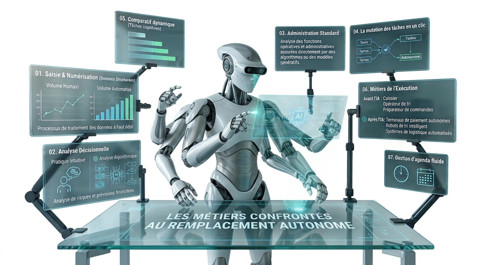

Analyse prospective des postes opératifs et administratifs dont les flux d'exécution procèdent désormais d'algorithmes et de systèmes autonomes.

Saisie manuelle de données à partir de documents physiques ou numériques, avec contrôle visuel unitaire et recopie systématique dans les logiciels.
Des modèles de vision et de reconnaissance optique lisent, extraient et classent les données structurées automatiquement en temps réel.
Prise en charge téléphonique unitaire des demandes courantes des usagers selon des scénarios et scripts de réponse préétablis.
Traitement instantané, multilingue et personnalisé des requêtes courantes 24h/24 par des assistants conversationnels autonomes.
Transfert manuel des appels téléphoniques entrant, réservation manuelle de créneaux et accueil physique d'orientation.
Routage prédictif des communications, synchronisation dynamique des agendas et gestion automatisée des rendez-vous.
Une analyse approfondie du Fonds Monétaire International sur les risques de substitution et les politiques de transition recommandées.
Étude prospective du Forum Économique Mondial détaillant la métamorphose des compétences et la redistribution des rôles tertiaires.
L'OCDE évalue l'impact de l'adoption de l'IA sur la qualité du travail, le marché de l'emploi et la formation professionnelle à l'échelle internationale.
 IA &
IA &